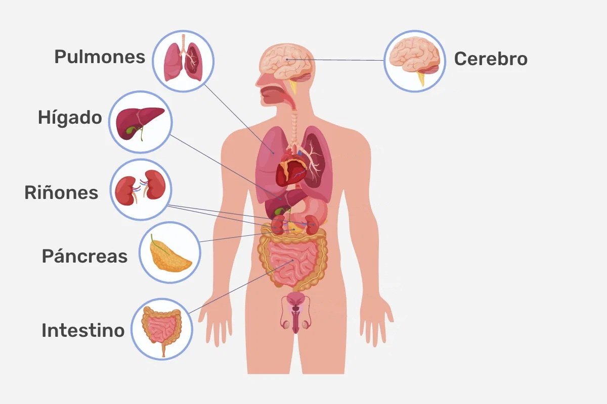

Pancreatitis
La pancreatitis, una inflamación del páncreas con causas tan variadas como el alcohol o los cálculos biliares, puede derivar en graves complicaciones. Descubre sus síntomas y riesgos clave.
📚 La enciclopedia UA es una recopilación de más de 3 artículos y no menos de 5 de diferentes enfermedades y patologías
La pancreatitis, una inflamación del páncreas con causas tan variadas como el alcohol o los cálculos biliares, puede derivar en graves complicaciones. Descubre sus síntomas y riesgos clave.
La artritis reumatoide va más allá del dolor articular: es una enfermedad que puede comprometer varios órganos. Descubre aquí sus señales y factores de riesgo.
La gripe es una infección respiratoria estacional causada por virus, que aparece de golpe con fiebre, dolores musculares y malestar general. Descubre cómo prevenirla, reconocer sus síntomas y evitar que derive en algo más serio.
Haz click en cada órgano para ver un ejemplo de una enfermedad que afecte a estos órganos
Puedes consultar un blog sobre enfermedades aquí: